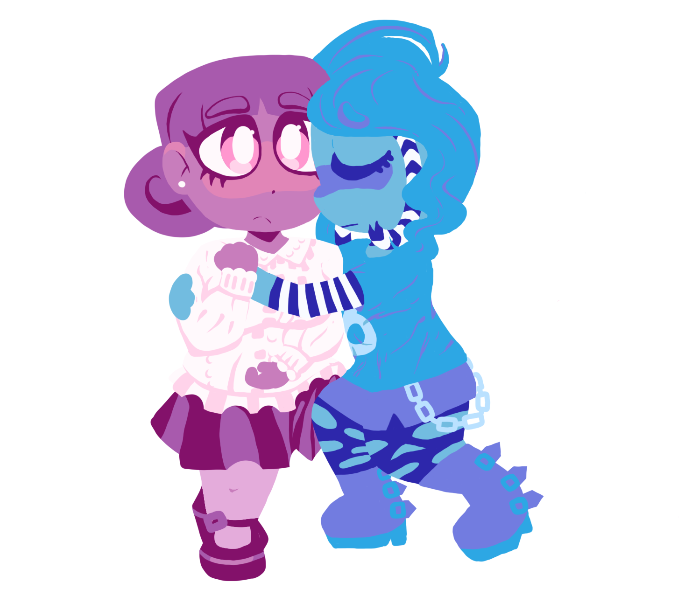
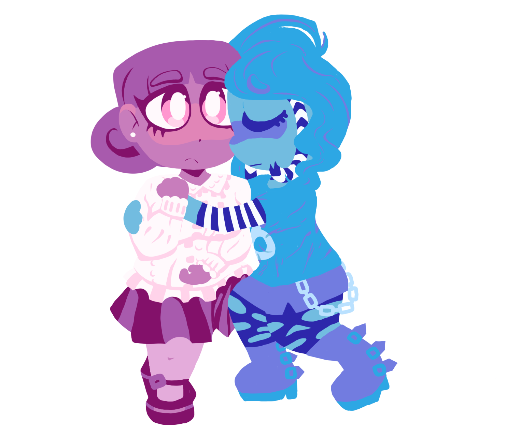

Photoshop
In Photoshop, I have worked on restoring and editing photographs, digital painting, illustration, animation, and cinemographing. I've used various tools including the magic wand and clone stamp tools, as well as knowing the shortcuts for many of them. I plan on using Photoshop in the future for photo editing, illustration, and digital painting.


 
